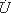
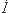
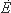

Согласно ГОСТу 2-710-81 любая комплексная
величина обозначается соответствующей буквой с чертой под ней,
например, С, U, E, I. Мы
будем придерживаться этого обозначения. Заметим, что по ГОСТу
для синусоидально изменяющихся величин, таких как напряжение,
ток и т. д., разрешается обозначать их комплексы соответствующей
буквой с точкой над ней: ,,
и т. д.
Записи
и U; I и
и т. д. эквивалентны.
Переход от одной формы записи к другой.